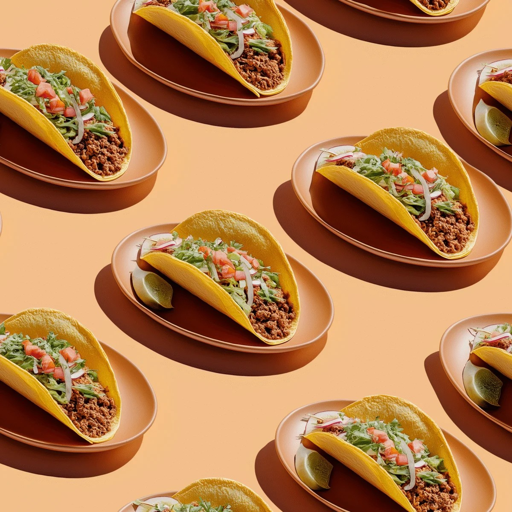

Home
Lentil Tacos

Growing up, my mom went through a few different health fads when I was growing up. Less red meat, no chicken, vegan; we'd stick to it for a year or two and then move to the next one. When we weren't eating meat, this recipe came up, and became one of our favorites. Even when we started eating meat again, this was a recipe we'd still make and I still make it when I need something tasty, filling, and easy to meal prep.
Ingredients:
- 1 finely chopped onion
- 3 garlic cloves, minced
- 1 teaspoon canola oil
- 1 cup dried lentils, rinsed
- 1 tablespoon chili powder
- 2 teaspoons ground cumin
- 1 teaspoon dried oregano
- 2 1/2 cups chicken or vegetable broth
- 1 cup salsa of your choice
Directions:
- Saute the onion and garlic together until softened and fragrant.
- Add lentils, chili powder, cumin, oregano. Stir for 1 minute to combine.
- Add the broth and bring to a boil. Reduce and simmer covered for 30 mins, adding more liquid if needed.
- Uncover and cook for 5-10 minutes more, until some of the liquid simmers off.
- Using the back of a wooden spatula, mash some of the lentils against the side of the pot.
- Add salsa, stir to combine. Serve with toppings of your choice.